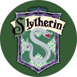

モジュール詳細：ホグワーツ
アロホモラ！…うーん、なんでこれでモジュールが解除されないんだろう？
- このモジュールを解除するには、爆弾の他のモジュール(ホグワーツの各寮に対して1つ)を解除し、どの寮が寮杯を獲得するか特定することである。
- 最初に、爆弾の他のモジュールの名前が「ホグワーツ」モジュールに一覧表示されている。左右のボタンを使用してスクロールする。
- 各モジュール名には、以下にリストされているホグワーツの4つの寮のうちいずれかのバナーが付いている。
- モジュールを解除した時と同時に「ホグワーツ」モジュールにそのモジュールの名前が表示されている場合、関連する寮にポイントが与えられる(以下を参照)。その寮にある残りのモジュールはリストから削除される。
- 全ての寮が解除済みのモジュールを取得すると、「ホグワーツ」モジュールはまだ検討中の寮のシールを表示する。最も多くのポイントを獲得した寮を選択する必要がある。
- いずれかの寮がポイントを受け取れないような方法でモジュールを解除するとミスが記録される。
- 2つの寮が同点になるようにモジュールを解除してもミスが記録される。この場合は、どちらかの寮を選択してモジュールを解除できる。
- 爆弾開始時に寮のシールが既に表示されている場合、いずれかのシールを押してモジュールを解除することが出来る。
 |
 |
Godric Gryffindor
[C×1, D×2, F×2, G×2, I×2, N×1, O×2, R×3, Y×1]
色:赤 |
 |
 |
Helga Hufflepuff
[A×1, E×2, F×4, G×1, H×2, L×2, P×1, U×2]
色:黄 |
 |
Rowena Ravenclaw
[A×3, C×1, E×2, L×1, N×2, O×1, R×2, V×1, W×2]
色:青 | |
|  |  |
Salazar Slytherin
[A×3, E×1, H×1, I×1, L×2, N×1, R×2, S×2, T×1, Y×1, Z×1]
色:緑 |
ポイントの計算方法
- モジュール名(ホグワーツに表示されているもの)と、その寮の創設者のフルネームを取得する。
- 全ての英字について、その英字がモジュール名に出現している回数に、創設者名に出現する回数を乗算する。
- 分かりやすくするために、この表には各創設者の名前に含まれている各英字の出現回数が示されている。
- これらの合計をポイントとして獲得できる。